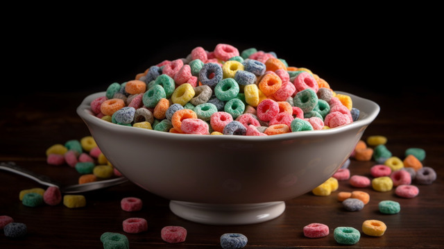

Froot Loops

Overview
Tap into your inner childhood (or simply repeat yesterday's breakfast) with this cereal that'll turn your milk into a raimbow. If you believe that breakfast should be simple, sugary, and splendidly colorful, this is the recipe for you.
Alternatively, you can go back to the home page if you'd rather try something else.
Ingredients
- A Spoon
- Kellogg's Froot Loops
- Milk (Preferably the white and dairy kind)
Directions
- Retrieve your favorite bowl. If it is not clean, find it, clean it, and then prepare it for use. This is often an overlooked yet incredibly important step.
- Pour a generous serving of Froot Loops into the bowl.
- Pour a generous serving of milk into the same bowl, aiming for at least the halfway mark of the bowl.
- Grab the nearest spoon and begin eating.
- Once you're done eating, drink the remaining milk.
Additional Notes
We recommend not using a fork to eat this - or any cereal for that matter.